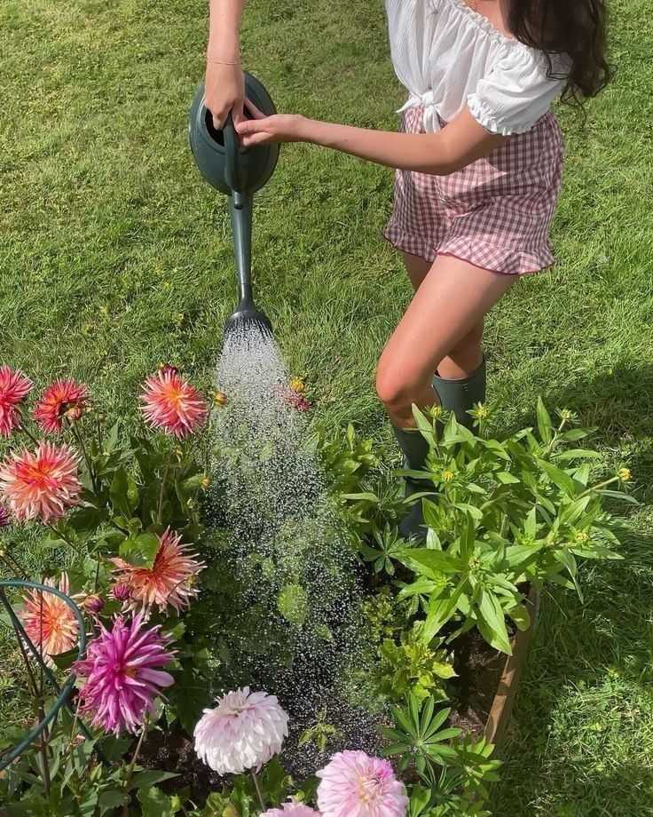
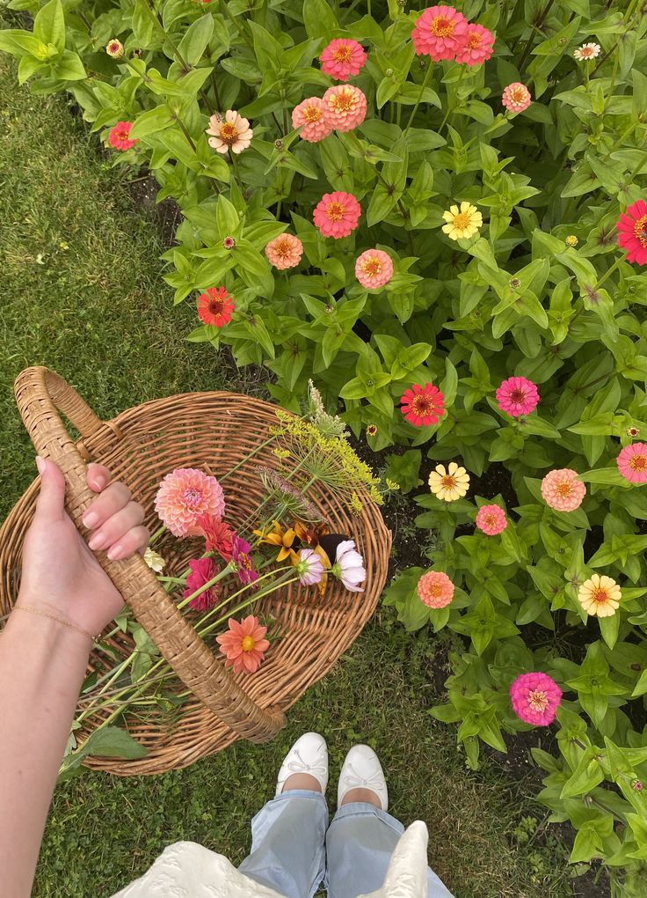
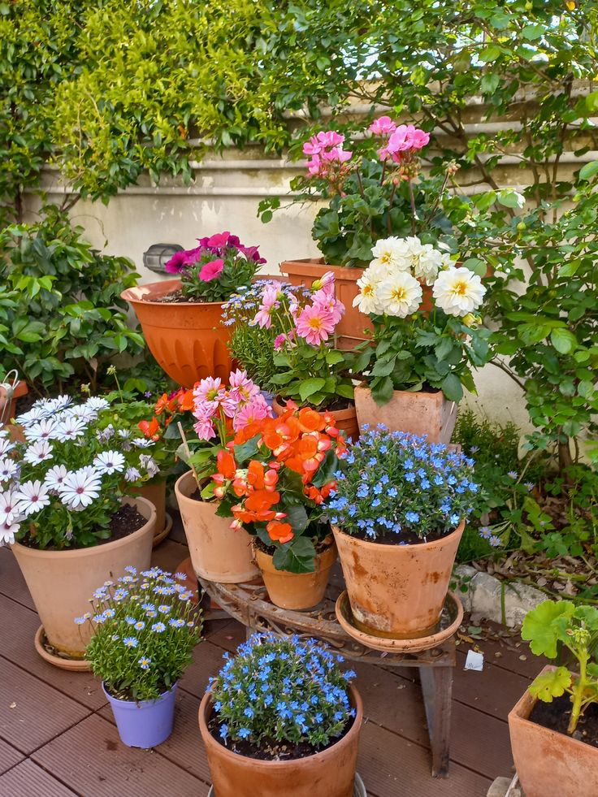
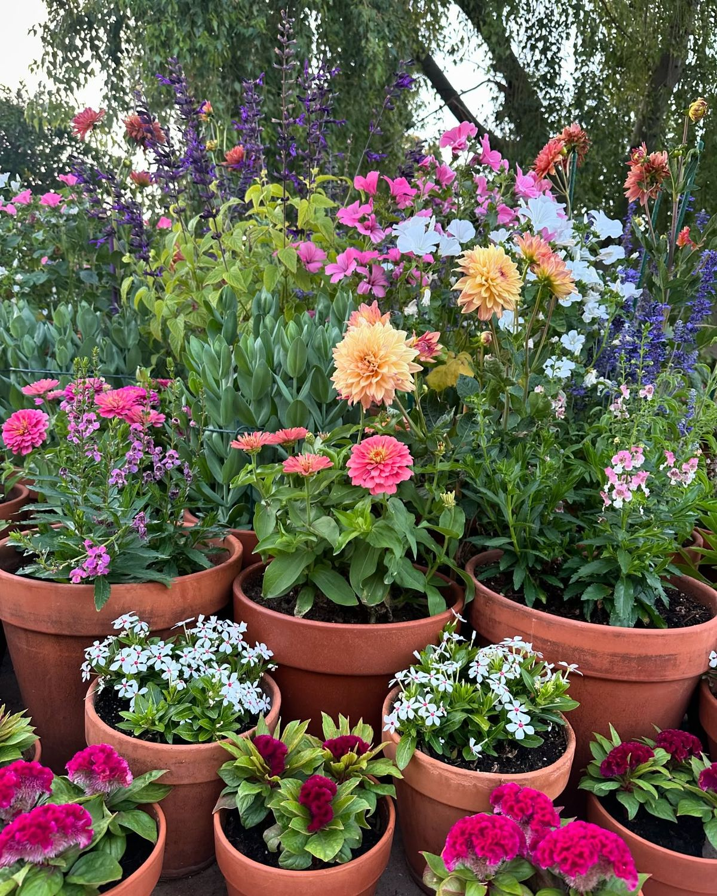

A cozy corner for blooms, beauty, and gentle gardening.
Welcome to The Floral Hearth
Here, gardening is slow, warm, and intentional — a place where every bloom is nurtured with care.
From watering dahlias to gathering fresh zinnias, this space celebrates the joy of tending to nature
with your own hands. Explore inspiration, color, and the peaceful rhythm of a flourishing garden.

A soft, sunlit moment of tending to blooming dahlias — capturing the heart of The Floral Hearth.

A quiet moment of gathering freshly bloomed zinnias in warm, cheerful colors.

A charming display of potted blooms arranged with warmth, color, and intention.

A vibrant collection of terracotta pots overflowing with pinks, purples, whites, and golden blooms.